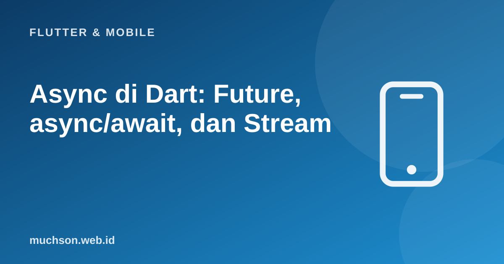

Beranda › Artikel › Flutter & Mobile
Flutter & MobileAsync di Dart: Future, async/await, dan Stream
Aplikasi seluler menunggu hal-hal lambat sepanjang waktu: jaringan, basis data lokal, berkas, sensor. Bila menunggu itu memblokir, layar membeku. Dart menangani ini dengan Future untuk satu hasil di masa depan dan Stream untuk rangkaian hasil, dengan sintaks async/await yang membuat kode asinkron terbaca seperti kode biasa.
Sebaiknya sudah paham: dasar Dart, widget Flutter

Setelah membaca dan mencoba materi ini, Anda mampu:
- menjelaskan event loop Dart dan mengapa UI tidak membeku saat menunggu
- memakai Future, async/await, dan menangani error dengan try/catch
- menjalankan beberapa Future paralel dengan Future.wait
- memakai Stream dan memahami perbedaannya dengan Future
- mengenali kapan perlu isolate (Isolate.run/compute) untuk pekerjaan CPU berat
Contoh Flutter ditampilkan sebagai kode yang mengikuti dokumentasi Flutter 3.x (Material 3, Dart 3). Bagian logika Dart murni dijalankan sungguhan dengan Dart SDK agar keluarannya dapat dibuktikan; kode yang butuh Flutter (widget) tidak dijalankan di halaman ini.
Future: satu nilai di masa depan
Future<String> ambilNama(int id) async {
await Future.delayed(const Duration(milliseconds: 100)); // seolah permintaan jaringan
if (id <= 0) throw ArgumentError('id harus positif');
return 'Pengguna #$id';
}
void main() async {
print('1. mulai');
// cara 1: async/await
final nama = await ambilNama(7);
print('2. $nama');
// cara 2: then (gaya callback)
ambilNama(8).then((n) => print('3. $n'));
print(' (baris ini tercetak SEBELUM hasil nomor 3: then tidak memblokir)');
await Future.delayed(const Duration(milliseconds: 150));
// penanganan error
try {
await ambilNama(-1);
} catch (e) {
print('4. galat tertangkap: $e');
} finally {
print('5. selesai');
}
}1. mulai
2. Pengguna #7
(baris ini tercetak SEBELUM hasil nomor 3: then tidak memblokir)
3. Pengguna #8
4. galat tertangkap: Invalid argument(s): id harus positif
5. selesai
Beberapa Future: berurutan atau paralel
Future<int> kerja(String nama, int ms) async {
await Future.delayed(Duration(milliseconds: ms));
return ms;
}
void main() async {
var sw = Stopwatch()..start();
await kerja('a', 200);
await kerja('b', 200);
await kerja('c', 200);
print('berurutan : ~${(sw.elapsedMilliseconds / 100).round() * 100} ms');
sw = Stopwatch()..start();
final hasil = await Future.wait([kerja('a', 200), kerja('b', 200), kerja('c', 200)]);
print('paralel : ~${(sw.elapsedMilliseconds / 100).round() * 100} ms $hasil');
// Future.wait menolak bila salah satu gagal; eagerError: false menunggu semuanya
try {
await Future.wait([kerja('x', 50), Future<int>.error(StateError('gagal sengaja'))]);
} catch (e) {
print('galat dari Future.wait: $e');
}
}berurutan : ~600 ms
paralel : ~200 ms [200, 200, 200]
galat dari Future.wait: Bad state: gagal sengaja
Stream: banyak nilai dari waktu ke waktu
| Future | Stream | |
|---|---|---|
| Jumlah hasil | Satu (atau galat) | Nol sampai banyak, lalu selesai |
| Contoh | Satu respons HTTP, membaca satu berkas | Ketikan pengguna, lokasi GPS, pesan WebSocket, perubahan basis data (Firebase) |
| Menunggu | await | await for atau listen |
| Di Flutter | FutureBuilder | StreamBuilder |
import 'dart:async';
Stream<int> hitungMundur(int dari) async* { // async* + yield menghasilkan aliran
for (var i = dari; i >= 1; i--) {
await Future.delayed(const Duration(milliseconds: 50));
yield i;
}
}
void main() async {
// await for: proses setiap nilai saat tiba
await for (final n in hitungMundur(3)) {
print('tick $n');
}
// transformasi aliran
final genap = await hitungMundur(8).where((n) => n % 2 == 0).map((n) => 'genap $n').toList();
print(genap);
// listen dan pembatalan langganan
final langganan = hitungMundur(100).listen((n) => print('didengar $n'));
await Future.delayed(const Duration(milliseconds: 130));
await langganan.cancel();
print('langganan dibatalkan');
// StreamController: membuat aliran sendiri
final kontrol = StreamController<String>();
kontrol.stream.listen((p) => print('pesan: $p'), onDone: () => print('aliran selesai'));
kontrol..add('halo')..add('dunia');
await kontrol.close();
}tick 3
tick 2
tick 1
[genap 8, genap 6, genap 4, genap 2]
didengar 100
didengar 99
langganan dibatalkan
pesan: halo
pesan: dunia
aliran selesai
Future dan Stream di antarmuka
// FutureBuilder: tampilkan status memuat / galat / data
FutureBuilder<List<Produk>>(
future: _janjiProduk, // buat Future di initState, BUKAN di dalam build (akan memanggil ulang tiap build)
builder: (context, snapshot) {
if (snapshot.connectionState == ConnectionState.waiting) {
return const Center(child: CircularProgressIndicator());
}
if (snapshot.hasError) {
return Center(child: Text('Gagal memuat: ${snapshot.error}'));
}
final data = snapshot.data ?? [];
if (data.isEmpty) return const Center(child: Text('Belum ada produk.'));
return ListView(children: data.map((p) => ListTile(title: Text(p.nama))).toList());
},
)
// StreamBuilder: sama, untuk aliran
StreamBuilder<int>(
stream: _aliranSensor,
builder: (context, snapshot) => Text(snapshot.hasData ? 'Nilai: ${snapshot.data}' : 'Menunggu...'),
)Pekerjaan berat: isolate
Dart berjalan pada satu utas dengan event loop; async/await tidak membuat kode CPU-berat menjadi paralel. Mengurai JSON berukuran besar atau memproses gambar di utas utama membuat animasi tersendat. Pindahkan ke isolate: Isolate.run(() => hitungBerat(data)) (Dart 2.19+) atau compute() di Flutter. Isolate tidak berbagi memori; data disalin lewat pesan.
import 'dart:isolate';
int fibonacci(int n) => n < 2 ? n : fibonacci(n - 1) + fibonacci(n - 2); // sengaja mahal
void main() async {
final sw = Stopwatch()..start();
final hasil = await Isolate.run(() => fibonacci(32)); // berjalan di isolate terpisah
print('fib(32) = $hasil, selesai tanpa memblokir isolate utama');
print('isolate utama tetap bebas selama menunggu: ${sw.elapsedMilliseconds >= 0}');
}fib(32) = 2178309, selesai tanpa memblokir isolate utama
isolate utama tetap bebas selama menunggu: true
1. Mengapa Future untuk FutureBuilder dibuat di initState, bukan di build?
2. Ubah tiga await berurutan yang independen menjadi paralel.
3. Apa bedanya Stream broadcast dan single-subscription?
4. Mengapa langganan Stream harus dibatalkan?
- Future = satu hasil nanti; async/await menuliskannya linear dan try/catch menangani galat.
- Future.wait menjalankan beberapa Future bersamaan; Stream menghasilkan banyak nilai (async*, yield, listen, await for).
- FutureBuilder/StreamBuilder menangani memuat, galat, dan data; buat Future di initState.
- async bukan paralel: pekerjaan CPU berat dipindah ke isolate.